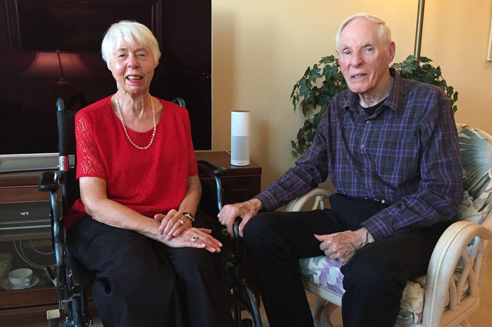
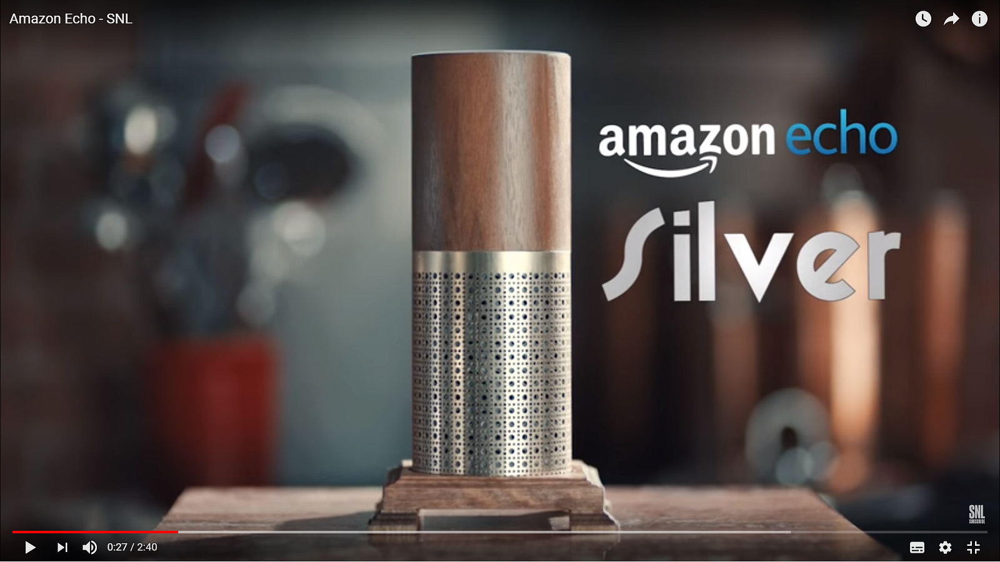
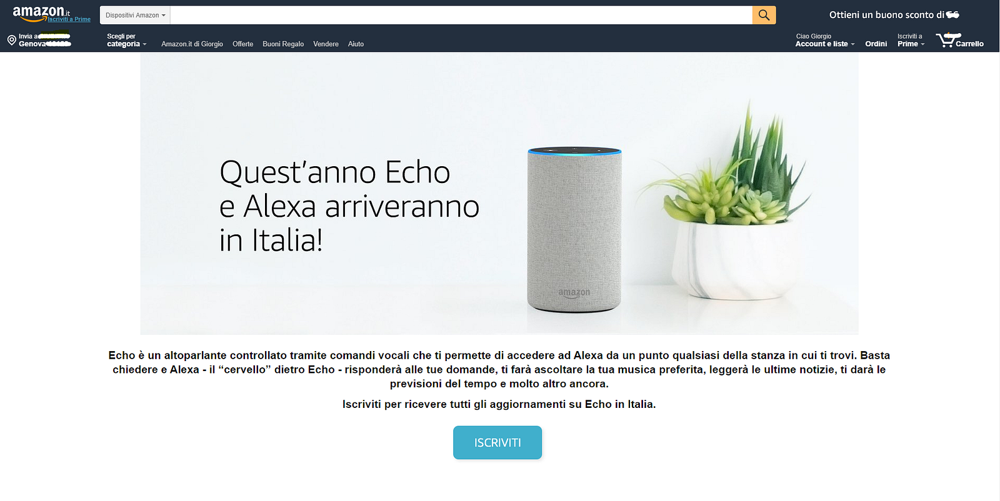
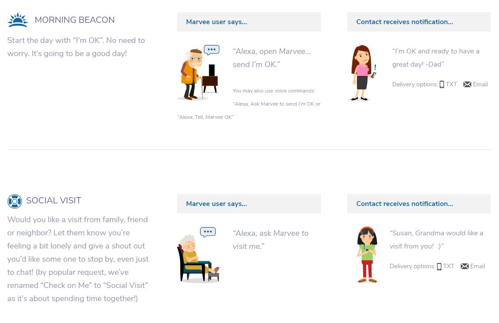
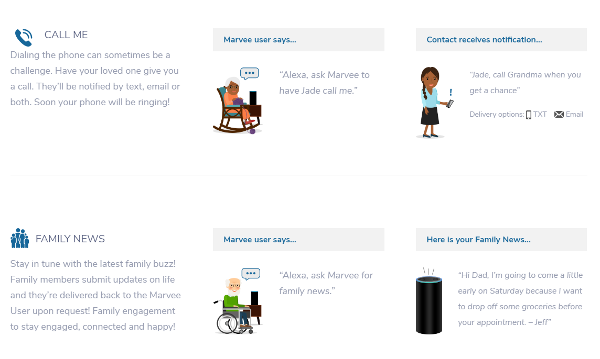

Assistenza vocale per la terza età
Le applicazioni per smartspeaker possono aiutare le persone anziane a non sentirsi sole?

L’anno scorso, qualche mattacchione mise su youtube un video in cui veniva presentato Amazon Echo Silver, fantomatica versione e parodia del vero prodotto Amazon Echo, specificamente studiato per le persone anziane.

Il video, fatto così bene tecnicamente da sembrare, a prima vista, una vera pubblicità di un nuovo dispositivo Amazon, diventò famoso per una doppia ironia: da un lato venivano attribuite allo smartspeaker impossibili funzionalità di intelligenza (addirittura visiva), ma sopratutto venivano presi in giro disturbi e comportamenti stereotipati delle persone anziane: la sordità, lo storpiare la wake-word Alexa in mille modi diversi, la perdita di memoria, la presunzione del “lo sapevo”, etc. etc.
Tra le scenette della pantomima, la più simpatica è forse la funzionalità “Uh Huh” grazie alla quale Alexa sembra seguire un discorso, rispondendo con l’intercalare non-verbale al racconto sconclusionato di un anziano che narra ad Alexa una qualche vicenda senza capo né coda del passato. Tornerò dopo su questo.
Per i pochi che non lo conoscono, ecco il video:
Smart-speaker Skill (in Italiano)?
Scherzi a parte, negli ultimi mesi si è parlato con grande attenzione delle possibilità degli smart-speaker nell’ambito health-care, in particolare per l’assistenza alle persone anziane.
Per quanto riguarda la definizione di smart-speaker rimando all’articolo dell’anno scorso, ma ancora valido: Smart speaker: cosa sono, quali sono, come funzionano e quanto costano.
Il mercato degli assistenti vocali e degli smartspeaker è in grande fermento ma le tecnologie contendenti nel 2018 rivelano un duopolio: da un lato Amazon Alexa, con i dispositivi per la famiglia Amazon Echo, dall’altro il competitor “emergente” Google, con gli analoghi dispositivi Google Home, versione vocale della più vasta tecnologia “multimodale” Google Assistant.
Al momento è Google l’unico dei due che ha già commercializzato in Italia i dispositivi in lingua italiana (a partire dal 15 Marzo se non erro),
ma anche Amazon ha appena rilasciato (22 Maggio) una versione di test ad un numero ristretto di utenti di Alexa in lingua italiana. Probabile che il lancio ufficiale avvenga tra qualche mese massimo:

Sia Alexa sia Google Home sono metabot, ovvero assistenti virtuali su cloud connessi a milioni di dispositivi utente e dotati di una “intelligenza artificiale” centralizzata e proprietaria.
Sebbene i metabot assolvano a molteplici compiti di base, come fornire informazioni di vario tipo (previsioni del tempo, news, accesso a wikipedia, ascolto di musica, radio in streaming, audiolibri, etc.), si prevede un grande sviluppo di un ecosistema di applicazioni terze parti (chiamate skill nella terminologia Amazon Alexa, o chiamate action nel mondo Google Assitant), che svolgeranno i compiti più vari.
Gli “skill” degli assistenti virtuali sono l’equivalente delle “app” nel mondo mobile.
Fatta questa introduzione all'ambito tecnologico degli assistenti vocali, torniamo alle applicazioni specifiche per le persone anziane.
Alexa, Telefono — Casa
Una delle funzionalità possibili con gli smartspeaker è l’evoluzione del “telefono di casa” in un telefono attivato da comandi vocali.
Alexa rende possibili molte interessanti possibilità di comunicazione telefonica, di video-chiamata e messaggistica:
Drop in: è possibile fare delle chiamate “telefoniche” tipo “interfono” tra diversi dispositivi all'interno della stessa abitazione o tra dispositivi remoti, appartenenti a utenti abilitati. L’esempio classico all'interno della famiglia è quello di comunicare direttamente con un proprio familiare (la persona anziana nel nostro caso) attraverso due dispositivi Amazon Echo, uno presso la camera da letto della persona anziana, e l’altro presso la figlia che abita in altra abitazione. Per chiamarsi basterà dire:
Alexa, passami mamma
Annunci: altra funzionalità di Alexa è quella degli annunci “broadcast” che possono essere ricevuti da tutti i dispositivi all'interno di una abitazione:
Alexa, dì a tutti che sto arrivando a casa. Sarò lì alle 17:30!
Chiamate: è possibile fare chiamate telefoniche o video-chiamate, attraverso sincronizzazione con la rubrica dei contatti sulla Alexa app.
Alexa, chiama papà
Messaggi: è possibile mandare messaggi SMS oppure audio/video messaggi. Per esempio la persona anziana può semplicemente lasciare un messaggio vocale a suo figlia Federica, dicendo:
Alexa, manda messaggio a Federica
e dettando il messaggio, che verrà recapitato a suo figlio via Alexa app o dispositivo Echo di Federica. Altri dettagli qui — vedi anche questo articolo.
Verso i badanti virtuali?
In aggiunta a tutte le funzionalità di interazione vocale già disponibili con i metabot, stanno nascendo parecchie applicazioni terze parti (sopratutto skill per Alexa) per l’assistenza a persone disabili, con problemi di mobilità e la cura remota degli anziani.
Un settore in fermento è sicuramente quello delle applicazioni software ed hardware nella smarthome integrata dagli assistenti vocali, con una grande diffusione di dispositivi “smart” integrabili su Alexa e Google Home. In Italia è molto partecipato il gruppo Facebook Google Home Mini, in cui si parla ad oggi soprattutto di integrazione con dispositivi domotici.
La validità delle interfacce vocali per le persone anziane e con problemi di mobilità è indubbio, si pensi ad esempio al controllo dell’illuminazione, della temperatura e della postura con un letto reclinabile elettricamente con comandi vocali.
Un altro ambito interessante è quello dell’osservazione delle activities of daily living, che danno la misura del livello di indipendenza e quindi del benessere della persona.
La startup TESEO di Genova, fornisce un sistema in grado di imparare abitudini significative e questo consente di discriminare tra situazioni normali, eventi anomali (ad es. cadute e svenimenti) e variazione nel tempo di abitudini connesse alle ADL, specchio di un cambiamento del livello di indipendenza della persona. Il sistema funziona attraverso sensori wearable ed interfaccia vocale con la persona seguita. Vedi video demo:
E ancora, nell’ambito delle applicazioni robotiche con funzioni di assistenza medica, la startup in parte genovese PilloHealth, che sta rilasciando sul mercato un robot che dispensa pillole, con riconoscimento facciale della persona.
Il dispositivo comprende un’interfaccia vocale e API per Pillo-skill terze parti. Pillo agisce in una certa misura anche come assistente virtuale “general purpose”, alternativo a quelli dei big player dell’assistenza virtuale domestica.
Di applicazioni hardware robotiche per la domotica parleremo sicuramente in successivi articoli in ConvComp, ma torniamo ora al tema dell’assistenza agli anziani, soprattutto alle possibili skill software che si possono realizzare nell’ambito dell’assistenza e dell’entertainment per la terza età.
Marvee, chat di gruppo vocale per l’assistenza all’anziano
Uno skill che merita di essere citato è Marvee, di Heidi Culbertson. Heidi, un’esperta di applicazioni vocali, ha creato uno skill Alexa per sua mamma Marvee, anziana con problemi di mobilità e progressiva cecità.
L’idea di Heidi è quella di avere un sistema di comunicazione remota tra i componenti della famiglia e la mamma che vive da sola.
Attraverso l’applicazione, gli utenti possono per esempio inviare un “Morning Beacon”, ovvero un messaggio di gruppo per fare sapere ai propri cari cosa si sta facendo. Inoltre gli utenti possono, con semplici comandi vocali, inviare messaggi di testo o email con richieste specifiche del tipo “vienimi a trovare”, “chiamami”, etc. Tutti i dettagli qui.


Si potrebbe pensare che in fondo quest’applicazione non sia niente o poco di più dell’equivalente di un gruppo Whatsapp, ma quello che fa la differenza, secondo me, è proprio l’interfaccia vocale come mezzo di interazione, più adatto alla persona anziana rispetto all’iterazione con una app su telefono mobile; perfino meglio di un telefono fisso.
Il piacere del raccontare di sé (anche parlando ad una macchina)?
Torno alla fantomatica funzionalità di pseudo ascolto “uh huh” del video parodia iniziale, perché ci sono implicazioni meno banali di quello che potrebbe sembrare.
Cathy Pearl, esperta senior di applicazioni vocali e conversational designer, ora in Google, ha recentemente scritto il bell’articolo “The Societal Benefits of Smart Speakers”, nel quale accenna tra i vari punti trattati al problema della companionship.
La solitudine è un problema che riguarda tante persone, soprattutto quelle anziane. Molti anziani vivono da soli e possono sentirsi isolati. Idealmente potrebbero essere circondati da amici, dalla famiglia e da persone che si prendono cura di loro andando a visitarli di persona. Ma sfortunatamente questo non avviene sempre.
E’ possibile allora che un giorno una nuova generazione di smartspeaker intelligenti aiuti a risolvere il problema?
Una ricerca di Scientific American di qualche anno fa, ha analizzato le conversazioni delle persone per determinare qual’è l’argomento di cui le persone parlano maggiormente. Sorprendentemente, lo studio ha evidenziato che le persone parlano perlopiù di se stesse! La ricerca ha dimostrato cioè che:
Le persone hanno piacere quando parlano di loro stesse, anche se nessun altro li sta ascoltando!
Mi viene allora in mente il chatbot, citato alla nausea, ELIZA, sviluppato nel 1966 da Joseph Weizenbaum, che faceva la parodia di un terapeuta Rogersiano, in buona parte rispondendo al paziente con domande ottenute dalla riformulazione delle affermazioni del paziente stesso.
Così, per esempio, alla frase:
Mi fa male la testa
il programma potrebbe ribattere con:
Perché dici che ti fa male la testa?
oppure la risposta a:
Mia madre mi odia
potrebbe essere:
Chi altro nella tua famiglia ti odia?
Un ascoltatore virtuale potrebbe essere realizzato come skill di un assistente vocale, al fine, non dico di fare una analisi psicologica del parlante, ma forse sarebbe già bello avere una applicazione dialogica in grado di reggere una “conversazione di ascolto”, di tutto quello che ha da dire il nostro anziano narratore!
Un sistema di registrazione dei ricordi personali, se volete.
Un diario dettato a voce.
Infine un sistema di memorizzazione di informazioni personali potrebbe creare un grafo di conoscenza semantica. Da usarsi per condivisione ai propri cari. I posteri forse. Affascinante, no?
Smart speaker nelle case di cura?
Nel 2017 alcuni ricercatori hanno realizzato uno studio pilota su 50 residenti ottuagenari di una casa di riposo vicino a San Diego (USA). L’esperimento fu condotto da Davis Park, direttore del Front Porch Center for Innovation, il quale crede fermamente che la tecnologia vocale possa aiutare le persone anziane nel comfort della propria abitazione, evitando che queste si sentano isolate.
Lo studio fu diviso in due parti: le funzioni base di Alexa, e l’integrazione smart home. Durante una fase iniziale, gli ospiti della casa di riposo si abituarono ad usare Alexa nella quotidianità, per la lettura di audio-libri, le informazioni sull'agenda giornaliera delle cose da fare, il promemoria delle medicine da prendere, l’ascolto delle ultime notizie e la comunicazione con i propri cari.
Dopo sei mesi di sperimentazione, i risultati furono che il 75% dei residenti aveva interagito con Alexa giornalmente, e la stessa percentuale di persone sostenne che l’assistente virtuale li aveva aiutati a sentirsi più connessi con la famiglia e gli amici. La totalità (100%) degli intervistati ha affermato che Alexa ha reso nel complesso la loro vita migliore.
Nella seconda parte dello studio, Alexa è stata integrata con tecnologia smart home al fine di aiutare i residenti a controllare l’ambiente circostante, chiedendo ad Alexa di accendere il riscaldamento, chiudere le luci, o chiamare qualcuno per aiuto.
Eric Topol, medico ed autore di “The Creative Destruction of Medicine: How the Digital Revolution Will Create Better Health Care”, riassume il perché la tecnologia vocale stia cambiando la vita degli anziani in America, nell'articolo New Technologies Help Seniors Age In Place — And Not Feel Alone.
“Le persone vogliono essere autonome, a prescindere dall'età anagrafica.” - Eric Topol
Ecco il documento completo (51 pagine) sullo studio della casa di cura Front Porch: Amazon Alexa Pilot Analysis Report.
Un’altra esperienza interessante, dove Alexa è usata come strumento complementare a degli incontri di musicoterapia in una altra casa di riposo:
Ulteriori spunti / Aggiornamenti:
- How Voice-First Technology Can Drastically Change Aging
- New Technologies Help Seniors Age In Place — And Not Feel Alone
- The Octogenarians Who Love Amazon’s Alexa
- Amazon Alexa — Voice-activated model for engagement
- Alexa…Just what the doctor ordered?
- Voice Assistant and Older Adults Lifestyle
- Could Amazon Echo help cut the cost of dementia?
- INTRODUCING LISA BY CUIDA HEALTH
- 9–11–2018: Amazon Alexa in lingua italiana è ora disponibile (data di lancio Italia: 24 Ottobre 2018). I dispositivi smartspeaker che attualmente sono disponibili in lingua italiana sono quindi Google Home ed Amazon Alexa.
- 7–01–2019: articolo di Max Amordeluso: Alexa for the Elderly — How Voice User Interfaces Can Improve the Lives of Older Adults Living Alone
- Alexa for Business, permette la realizzazione di skill intra-aziendali che potrebbero avere applicazioni non solo nelle case di cura ma anche in ambito ospedaliero. Ne parleremo in un successivo approfondimento.
- 10–09–2019: articolo Why Alexa is Perfect for Seniors. I lettori più nerd possono apprezzare la presentazione di Alexa For Business del CTO di Amazon Werner Vogels.
- 7–11–2019: articolo The impact of voice technology on loneliness and isolation
- 23–01–2020: articolo The disconnected become attached to voice
Socialità, indipendenza, dignità
In “The Societal Benefits of Smart Speakers”, articolo già menzionato, Cathy Pearl riflette sull’esperimento fatto con i residenti del Front Poch. Mi piace molto la sua riflessione, di cui riporto qui un estratto in chiusura:
Creators of a home assistant robot were surprised when their first real user, a quadriplegic man, immediately asked the robot to fetch a towel to wipe his mouth. It was certainly not the top capability the creators of the helper robot had designed it for, but sometimes these automated devices give us something we don’t always think enough about: our dignity.
For those with other types of physical disabilities, the Echo can foster independence. A man with cerebral palsy had difficulty regulating his body temperature in the middle of the night. Now, with the Echo, he can adjust the thermostat himself, without having to wake his mom.
Facendo mie le parole di Cathy:
I dispositivi automatici (non solo gli assistenti vocali) potrebbero restituirci una cosa a cui non diamo abbastanza valore: la nostra dignità.
Originally published on Medium.